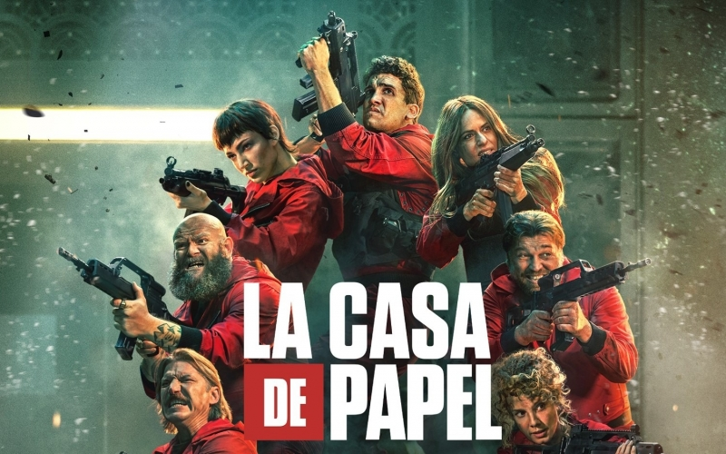

Ursprungsland: Spanien
År: 2017-2021
Genre: Action/Drama
Regissör: Alex Pina
Skådespelare: Ursula Corbero, Itziar Ituno, Pedro Alonso, Alba Flores, Jaime Lorente, Paco Tous, Miguel Herran, Esther Acebo
La Casa de Papel är en serie som på engelska har fått översättningen "Money Heist". Den egentliga översättningen till svenska är i princip "Pappershuset".
Den här serien har totalt 41 avsnitt och hade seriefinal i Dec 2021. Det jag älskar med denna serien är att det är en blandning av intellegens, spänning, humor och action i den. Tittarna får många cliffhangers och vändningar som gör att den hela tiden faschinerar. Det bästa med den är "Professorn" som med sin skicklighet och smarta hjärna imponerar gång på gång.
Serien kretsar kring en grupp människor vars vägar har mötts av olika skäl. Dem planerar rån av olika slag och mer än så tänker jag inte avslöja, se serien helt enkelt.